| Image | Cost | Produces | 5 Heart Selling Price |
|---|---|---|---|
Chicken 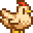 |
800g | 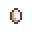 Egg - 40g 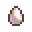 Large Egg - 75g |
1,040g |
Chicken |
800g | 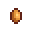 Brown Egg - 40g 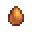 Large Brown Egg - 75g |
1,040g |
Void Chicken 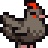 |
n/a | 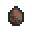 Void Egg - 50g | 1,040g |
{kind=link}
{kind=link}
{kind=link}
{kind=link}
{kind=link}
Ducks
The Duck is an animal in Stardew Valley. Provided the player has purchased a Big Coop, they can be bought at Marnie's Ranch for 4000g, or by hatching a Duck Egg in an incubator.The Duck will produce Duck Egg every morning, which sells for 50g. Once sufficient friendship is reached, they can produce a Duck Feather (3 Hearts and half), which sells for 100g.
| Image | Cost | Req. | Produces | 5 Heart Selling Price |
|---|---|---|---|---|
Duck 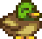 |
4,000g | Big Coop | 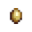Duck Egg - 75g 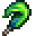 Duck Feather - 110g |
5,200g |
{kind=link}
{kind=link}
Rabbits
The Rabbit is an animal in Stardew Valley. It is only obtained by purchasing it from Marnie at Marnie's Ranch for 8000g, provided the player has purchased the Deluxe Coop. The Rabbit cannot reproduce.The Rabbit has a chance to produce Wool every morning, which sells for 270g Gold. Once sufficient friendship is reached, they can produce a Rabbit's Foot, which sells for 450g.
| Image | Cost | Req. | Produces | 5 Heart Selling Price |
|---|---|---|---|---|
Rabbit 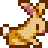 |
8,000g | Deluxe Coop | 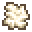 Wool - 270g 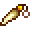 Rabbit's Foot - 450g |
10,400g |
{kind=link}
{kind=link}
Dinosaurs
To obtain a Dinosaur, a Dinosaur Egg must be found while artifact hunting. Putting that egg into an incubator will result in hatching a dinosaur. The Dinosaur itself will act like any other Coop-Animal, for the exception, that it lays Dinosaur Eggs every 1-5 days and (at least in earlier builds of the game) makes no sound when speaking to it.
| Image | Cost | Req. | Produces | 5 Heart Selling Price |
|---|---|---|---|---|
Dinosaur 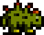 |
n/a | Big Coop | 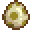 Dinosaur Egg - 350g | 1278g |
{kind=link}
Barn Animals
These animals cannot be purchased until a barn is built on your farm, and must occupy a spot in a barn. Their products are either gathered with a tool, or in the case of pigs, left on the ground outside while grazing.
Cows
The Cow is an animal in Stardew Valley. It comes in two varieties: White and Brown. It is obtained by purchasing one from Marnie for 1500g Gold.Cows mature after 5 days. A Cow will produce Milk every morning if the player uses the Milk Pail on it, which sells for 85g Gold. Once sufficient friendship is reached, they can produce a Large Milk, which sells for 110g Gold.
| Image | Cost | Produces | 5 Heart Selling Price |
|---|---|---|---|
Cow 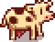 |
1,500g | 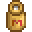 Milk - 85g 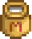 Large Milk - 110g |
1,950g |
Cow 
|
1,500g | Milk - 85g Large Milk - 110g |
1,950g |
{kind=link}
{kind=link}
Goats
The Goat is an animal in Stardew Valley. It is obtained by purchasing it from Marnie. The Goat produces Goat Milk.
| Image | Cost | Req. | Produces | 5 Heart Selling Price |
|---|---|---|---|---|
Goat 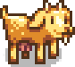 |
4,000g | Big Barn | 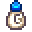 Goat Milk - 150g 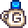 Large Goat Milk - 250g |
5,200g |
{kind=link}
{kind=link}
Sheep
The Sheep is an animal in Stardew Valley. It is obtained by purchasing it from Marnie.The Sheep will produce Wool every morning, if the player uses the Shears on it, which sells for 270g Gold.
| Image | Cost | Req. | Produces | 5 Heart Selling Price |
|---|---|---|---|---|
Sheep 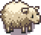 |
8,000g | Deluxe Barn | Wool - 270g | 10,400g |
Pigs
The Pig is an animal in Stardew Valley. It is obtained by purchasing it from Marnie. The Pig will produce Truffle every morning after being left outdoors, which sells for a base of 500g Gold. Truffles can be used in the Oil Maker to make Truffle Oil.
| Image | Cost | Req. | Produces | 5 Heart Selling Price | ||||||
|---|---|---|---|---|---|---|---|---|---|---|
Pig 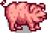 |
16,000g | Deluxe Barn | 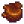 Truffle
|
20,528g |
Other Animals
Horses
The horse can be ridden to make traveling faster. If you leave it somewhere, it will find the way home by itself. It is obtained by purchasing the Stable from the Carpenter's Shop. The horse comes with the stable.
Slimes
Slimes are unique in that they are not docile and harmless like other animals. They are similar in appearance and behavior to Slimes found elsewhere in the game, and will attack and damage the player if able to. They are obtained by placing a Slime Egg in a Slime Incubator, either a player-crafted one or the built-in one that comes with the Slime Hutch. Slimes produce Slime, and do so only when both male and female slimes (those with and without antennae) are present in the same location, and when given access to water via the troughs in the Slime Hutch. This will appear in the form of animated piles of slime, which can be right-clicked to release multiple Slime items. These piles have a chance of appearing daily, much like the products of coop animals. Male and female slimes will also occasionally breed with each other. Slimes incubated or bred in this way can be fought and killed just like any other slimes, and will drop items. A slime hutch can become a very dangerous place after even a few eggs have hatched, and it is advised that players take caution. It is recommended that the player obtain the Slime Charmer Ring before attempting large-scale slime farming.